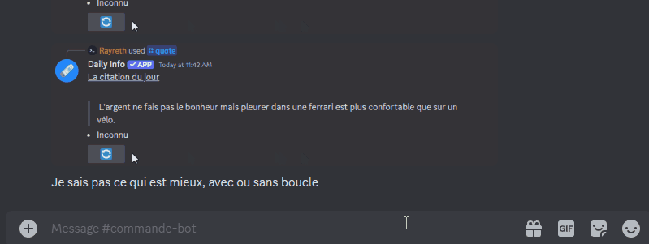
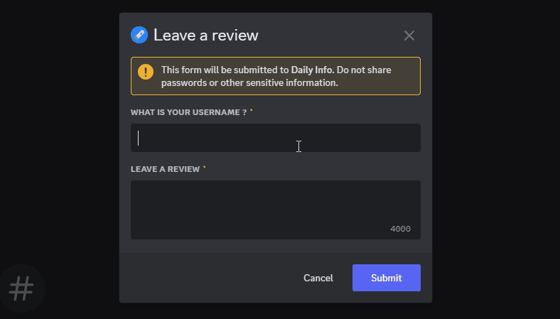

[Version 1.1] - 26-08-2024
Added
- Random Word Command: Added a new command that give a random word with his definitions.
- Reviews command: Added a new command for giving a reviews about the bot
- Top Authors command: Added a new command that give the ranking of authors with the most citations.


Changed
- Privacy Policy Update: The bot now logs all commands for security and troubleshooting purposes. This change helps us enhance security by monitoring potential threats and improve troubleshooting by diagnosing issues more effectively. For more details, please review our updated Privacy Policy.